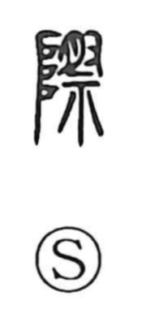

際

Uncategorized
Kun: kiwa | On: sai, zai
edge ・ verge ・ border ・ occasion ・ limit
Explanation
In the ancient forms, 際 combines 阜 on the left—the stepped ladder or terrace by which deities descend and ascend—with 祭 on the right, which shows a hand presenting meat upon an altar, the act of worship. Together they designate the sacred threshold before that ladder, the contact point where gods and humans meet—the brink (kiwa) where things reach their end or begin. From this core image the character comes to mean edge and verge, and by extension the utmost limit, as seen in expressions like 際涯 “limits,” 天際 “the horizon,” and, in Buddhist usage, 金輪際 “the very bottom of the world; absolutely, to the last extremity.”